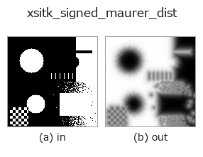

extra op• Datenarten: region → image
• Aufruf: fullseye.apply(img, "xsitk_signed_maurer_dist", a=0.5, b=0.5) (das 2-D-Modell ist ein Bild plus zwei skalare Regler a,b∈[0,1])

*Die Abbildung ist die tatsächliche Ausgabe auf einer synthetischen 128×128-Eingabe. Links Eingabe, rechts Ausgabe (ein Nicht-Bild-Rückgabewert wird als Wert gezeigt).*
Die vorzeichenbehaftete Distanzkarte (SimpleITK `SignedMaurerDistanceMap`), mittels tanh auf [0,1] komprimiert. Stellt den Abstand zur Grenze eines binären Bereichs (sowohl innen als auch außen) als Bild kontinuierlicher Werte dar, bei dem Positionen näher an der Grenze weiter von 0,5 entfernt sind.
> Die ausführliche Beschreibung unten ist der Originaltext — Zusammenfassung und Überschriften sind übersetzt.
`a は tanh のスケール(1.0+9.0*a で 1〜10。大きいほど遷移が緩やかで広い範囲がグレーになる)を振る。b` は未使用。距離を画素座標のスケールで解釈する点、符号(内側/外側どちらが正か)は SimpleITK のデフォルト規約に従う点に注意。
• Leitfaden zur Familie gallery2d_color_artistic
• Katalog der Beispieldaten (Download-URLs / Lizenzen) — 2-D nutzt skimage.data (BSD/Public Domain) plus synthetische Bilder, 3-D nennt Download-URLs echter Datenquellen (Stanford, PDS, …).
• Herkunft und Literatur der Operatoren — die Quellen der Forschung/Verfahren, auf denen diese Operatorfamilie beruht.
• Der kanonische Algorithmus (Autor, Jahr) und seine Anwendungen stehen im Familienleitfaden oben.
Das Programm unten ist nachweislich lauffähig (gleiche Eingabe wie die Abbildung). In der Studio-Hilfe wird dieser Block zu Schaltflächen, die es sofort laden und ausführen.
threshold 0.50 0.50 xsitk_signed_maurer_dist 0.50 0.50
▸ Load this pipeline · Load & run
• gallery2d_color_artistic — py -3.11 examples/gallery2d_color_artistic.py
image als Eingabe)identity · gaussian · mean_box · bilateral · unsharp · median · min_filter · max_filter
extra)xsitk_curvature_flow · xsitk_minmax_curv_flow · xsitk_curv_aniso_diff · xsitk_laplacian_sharpen · xsitk_grayscale_fillhole · xsitk_grayscale_grindpeak · xsitk_opening_by_recon · xsitk_closing_by_recon
*Provenance: ops.py — 2D Operator-Registry. Diese Notiz wird von tools/opdocs.py md erzeugt (nicht von Hand bearbeiten).*
© 2026 Kazufumi Furuse — Fullseye operator documentation. Licensed under Apache-2.0.